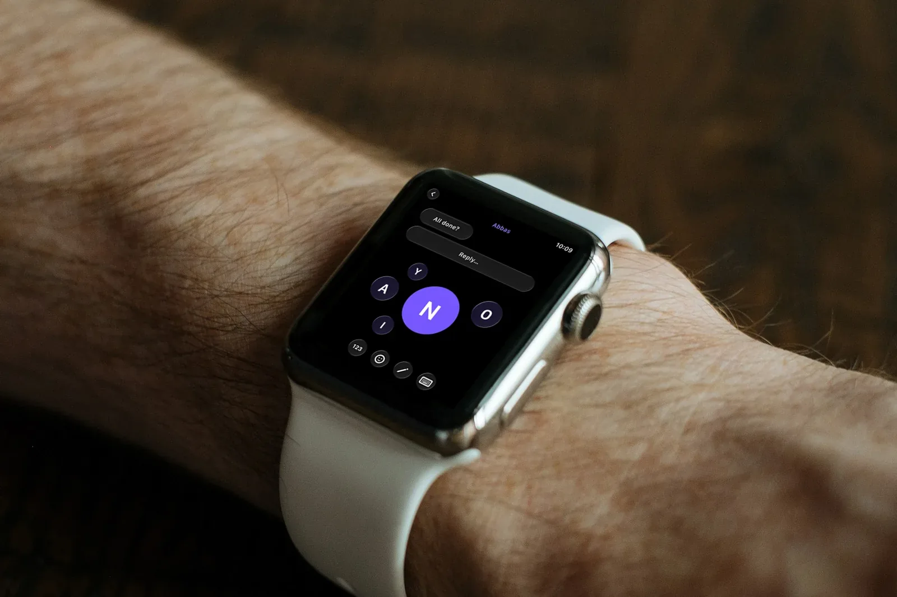
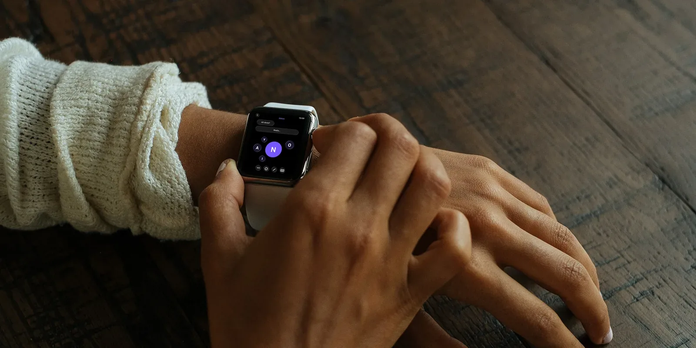
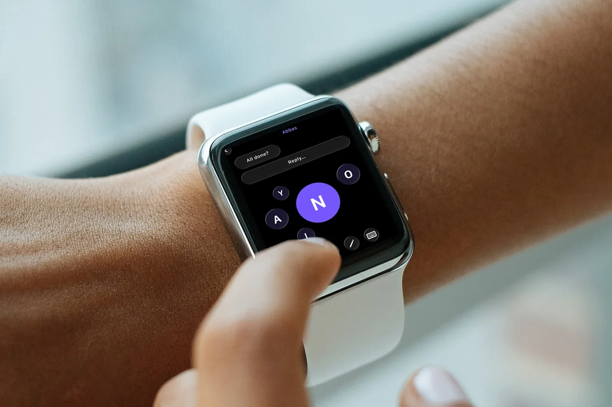

Bigger targets
Give the likeliest next letters most of the screen, so they're easy to hit on the first try.
CASE STUDY / CONCEPTUAL REDESIGN
For replies that aren’t worth pulling out your phone.
An Apple Watch keyboard that shows only the few letters you’re likely to type next, and makes them big enough to actually hit.
SEE THE DESIGN
001 / OVERVIEW
A conceptual redesign of the Apple Watch keyboard. The stock keyboard gives every key the same small space, so short replies often mean a mis-tap and a correction. This project explores whether prediction can make the right keys bigger, instead of guessing whole words.
Give the likeliest next letters most of the screen, so they're easy to hit on the first try.
Make mistakes less likely, and make fixing them quick when they happen.
Keep the full alphabet one Digital Crown turn away. Predictions change size, never what you can type.
002 / THE PROBLEM
The watch fits a full QWERTY layout onto a 45mm screen. That works for reading, but not for aiming.
Q gets as much room as E, even though you almost never need it.
Small targets mean careful aiming, which defeats the point of replying from your wrist.
A mis-tap means finding delete, then aiming again. That’s usually when people give up and grab their phone.
PROBLEM
The stock keyboard treats every letter as equally likely, so the keys are too small to hit reliably. Short replies take longer than they should, and corrections cost more than the typing itself.
HOW MIGHT WE
Make the letters you actually need easy to hit, without hiding the rest of the alphabet?
003 / USERS
Each one has a different reason the phone isn’t an option in that moment, and each one lines up with a scenario in the final design.

“My phone lives in my locker. If my mom texts, the watch is all I've got.”
“I leave my phone at home on runs. Then someone asks if I'm grabbing dinner.”
“I can read the message. I just can't hit the right letter.”
JESSICA’S REPLY TODAY, ON THE STOCK KEYBOARD
004 / INTERACTION FLOW
The main reply path, plus the side trips: editing, switching to dictation or Scribble, emoji, and what happens when a message doesn’t send.
MAIN PATH
EDIT
INPUT
EMOJI
RECOVERY
005 / ITERATION
My first rounds were about hierarchy: what should grow, what should stay visible, and how fast you could undo a mistake.
WHAT THE EARLY ROUNDS SHOWED
The toolbar was crowded, editing took too many steps, and some branches were more complicated than the tasks they were for. Most of the later work was taking things out.
006 / SYSTEM
Bubble size is the prediction. You can tell at a glance what the keyboard expects you to type, and still pick something else.
Five letters instead of 26 keeps every target big. Anything else is one Crown turn away.
Turn the Crown to scroll the rest of the alphabet. It’s precise without needing a precise finger.
Predictions only change size. Nothing types itself, and word suggestions are optional.
007 / FINAL DESIGN
One for each kind of reply I designed for, from a quick answer to a message that fails to send.

01 / PREDICTIVE REPLY
Jessica’s reply. N is the biggest bubble, “Nope” comes up as a suggestion, and a couple of taps send it.
02 / NEW MESSAGE
With nothing to go on, the bubbles start with common first letters like H and I, then narrow as soon as you tap.
03 / EMOJI BUBBLES
Mike at a crosswalk. Some replies don’t need words, so emoji use the same sizes: the likeliest one is the biggest.
04 / MANUAL TYPING + RECOVERY
Linda spells it out letter by letter. When the send fails, the message isn’t lost: retry, edit, or save it as a draft.
008 / REFLECTION
Time short replies on the stock keyboard and on a watch prototype, with people in situations like Jessica's and Mike's.
Count mis-taps and corrections, and check whether the recovery options get found when a message fails.
See whether bubbles that resize after every letter speed people up or pull their attention away.